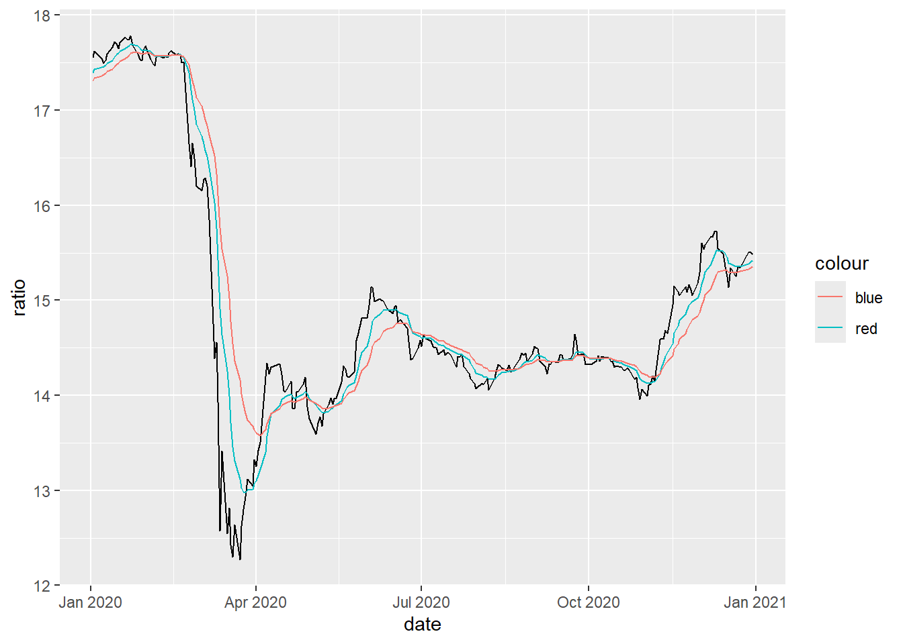

Efekt rebalansiranja na Zagrebačkoj burzi
Uvod
Domaći i inozemni investicijski fondovi često održavaju fiksne udjele dionica i obveznica u svom portfoliu. To se posebno odnosi na mirovinske i državne fondove, koji ciljaju određenu strukturu portfolia, poput poznatog 60 - 40 omjera (60% dionice, 40% obveynice). Ovi fondovi često imaju i zakonska ograničenja ulaganja u pojedini tip imovinske klase (dionice i obveznice)1. Ako tijekom određenog razodblja jedna klasa imovine raste u relativnom omjeru u odnosu na drugu klasu imovine, fondovi moraju prodavati imovinsku klasu koja je ostvarila bolje performanse i kupovati klasu imovine koja je ostvarila lošije performanse. Cilj je dosegnuti unaprijed utvrđene pondere u portfoliu. Fondovi dakle moraju kupovati gubitnike i provadati dobitnike, što može imati utjecaj agregatna kretanja dioničkih i obvezničkih tržišta. Rad upravo analizira mogući utjecaj rebalansiranja mirovinskih i drugi fondova na agregatnja kretanja dioničkog i obvezničkog tržišta u RH. Dioničko tržište reprezentira kretanje CROBEX indeksa, a kretanje obvezničkog tržišta kreanje CROBIS-a.
Efekt rebalansiranja2
Rebalansirnaje može uzrokovati velike transakcije troškove3 za fondove.
Politika rebalansiranj investicijskih fondova, može se provoditi prema dva pravila: kalendarsko pravilo i granično pravilo Doe (2025). Prema ganičnom pravilu, fondovi provode balansiranje kada udio određene imovinske klase prijeđe određenu, unaprijed utvrđenu granicu. Dopušta se fluktuacija unutar tih utvrđenih granica. Ideja je da se smanje transakcijski troškovi zbog (pre)čestog trgovanja. Prema kalendarskom pravilu, fondovi provode rebalansiranje u jednakim vremenskim intervalima. Najčešće je mjesčno rebalansiranje, iako neki fodnovi mogu koristiti kvartalno ili dnevno rebalansiranje. U ovom radu se pretpostavlja da se rebalansiranje radi na mjesečnoj razini, krajem mjeseca. Ako postoji znatno rebalansiranje na kraju mjeseca, očekuje se rast prinosa imovine s relativno slabijim performansama u prvom dijelu mjeseca i obrnuto. Razlog za mjesečno rebalansiranje može biti potreba za novčanim tokovima na kraju mjeseca Etula et al. (2020). Da bi se utvrdilo točno vrijeme rebalansiranje, nužno je raspolaganje dnevnim podacima o rebalansiranju od investicijskih fondova. Takvi podaci nisu javno dostupni pa se pretpostavlja mjesečno balansiranje koje je najčešći oblik rebalansiranja.
Metodološki, utjecaj graničnog i kalendarskog rebalansiranja analiyira se pomoću tri pristupa. Prvo se provodi deskrištivna analiza kako bi se bi utvrdile neuvjetovane razlike u prinosim između vremena rebalansiranja i ostalih vremena. Potom se provodi regresijska analiza koja isputuje statistički odnos između prinosal. Na kraju se provodi investicijski pristup u kojem se utvrđuju ekonomski efekti rebalansiranja. Ispituje profitabilnost investicijske strategije koja kupuje CROBEX kada je relativno podcjenjen u odnosu na dinamiku CROBIS-a, te kupnju CROBIS-a u obrnutom slučaju.
U analizi robusnosti testira se osjetljivost rezultata na 3 promjene u analizi. Prvo, procjenjujemo efekt rebalansiranja na početku mjesca umjesto na kraju mjeseca. Prvo se izračunava prinos CROBEX-a i CROBIS-a u posljednjih 15-ak trgovinskih dana u mjesecu, te se potom na početku sljedeček mjeseca kupuje imovina koja je ostvarila relativno lošiji rezultat. Rezultati pokazuju da ovakva strategija ostvaruje znatno lošije rezultate od bazične strategije koja kupuje relativno podcjenjenu imovinu 5 dana prije kraja mjeseca.
Drugi dio analize robusnosti analizira utjecaj pomaka u broju dana od kraja mjeseca. Utvrđuje se utjecaj na rezultat s obzirom na pomak varijable od 2 do 10 dana od kraja mjeseca.
Treći dio analize robusnosti analizira jakost efekta kroz vrijeme. moguće je da efekt gubi na snazi jer investitori ugađuju promjene u očekivanja. Zato testiramo prinose strategija za svaku godinu promatranja.
Pregled literature
Rani doprinos dan je u Perold and Sharpe (1988). Autori su pokazali
Peng and Wang (2024) uvode koncept faktorskog rebalansiranja, koji istražuje kako odluke o rebalansiranju portfelja utječu na dinamiku povrata faktora. Studija pokazuje da uzajamni fonodovi imaju konstantnu potražnju za faktorskom izloženošću (faktor veličine, vrijednosti i slično), te da promjene u faktorskoj izloženosti dovodi do pritisaka prodaje određene dionice, kako bi se faktorska izloženost vratila u ravnotežu.
Parker, Schoar, and Sun (2022) pokazuju kako rebalansiranja TDF fondova (eng. Target Date Funds)[^4] djeluju kontrarisjki, prodajući dionice nakon razdoblja snažnih tržišnih performansi i kupnjom nakon pada tržišta, djelujući suprotno dominantnim tržišnim trendovima. Politikom rebalansiranja utječu i na dinamiku prostornih (eng. cross-section) prinosa dionica.
Đunđek Kokotec, Orsag, and Klačmer Čalopa (2021) su istrađivali utjecaj vlasništva institucionalnih investitora na uspješnost i financijsku poziciju hrvatskih poduzeća. Rezultati pokazuju statistički značajan utjecaj vlasništva institucionalnih investitora na poslovnu uspješnost i financijsko zdravlje poduzeća.
[^4] TDF fondovi automatski prilagođavaju alokaciju imovine na temelju starosti investitora, postupno smanjujući izloženost dionicama u korist obveznica kako se približava mirovina. Ovaj dizajn omogućava ulagačima koji nemaju isksutva u aktivnom upravljanju portfeljem ostvarivanje primjerenog odnosa rizika i prinosa.
Podaci
U radu se koriste dva vremenska niza: 1) CROBEX koji odražava agregatnu dinamiku dioničkog tržišta u RH 2) CROBIS, koji odražava dinamiku obvezničkog tržištau RH. Izvor podataka je Zagrebačka burza. Postoje samo tri kolone: simbol (CROBEX ili CROBIS), datum i posljednja vrijednost indeksa na kraju dana. RAspon podataka je od 01.09.2003 do 07.03.2025. Vremenski nizovi CROBEX-a i CROBIS-a prikazani su na slici Figure 1. Gornja slika pokazuje snažan rast dionička tržišta u godinama koje su prethodile Velikoj Recesiji, te snažan pad 2008 i 2009 godine. U sljede’ih 25 godina nije dosegao najviše razine iz prethodnih razdoblja. Donja slika pokazuje dosta drugačiju dinamiku obvezničkog tržišta. Obveznički indeks je padao u radoblju prije Velike Recesije, da bi potom, uslijed hlobalnog smanjenja kamatnih stopa generirao pozitivne prinose sve do razdoblja COVID-a.
symbol | N | Mean | Median | SD | Min | Max |
|---|---|---|---|---|---|---|
crobex | 5,335 | 0.0003 | 0.0003 | 0.0104 | -0.102 | 0.1593 |
crobis | 5,335 | 0.0000 | 0.0000 | 0.0017 | -0.021 | 0.0212 |
Tablica (tab-summary?) prikazuje sažetak statistika za CROBEX i CROBIS. U tablici se nalaze broj promatranja, prosječna vrijednost, standardna devijacija, minimalna i maksimalna vrijednost dnevnih prinosa. CROBEX pokazuje veću standardnu devijaciju i veći prinos, u skladu s financijskom teorijom, prema kojoj dionice zbog rizične premije imaju veće prinose i veći rizik.
U tabilci (tab-dep?) su prikazane mjere povezanosti između CROBEX-a i CROBIS-a. Sve tri korelacijske mjere su (Pearson, Spearman, Kendall) iznimno niske, što upućuje na vrlo slabu međuovisnost promatranih vremenskih nizova. Pearsonova korelacija odražava linearnu vezu i vrlo je blizu nule, Spearmanova se odnosi na monotonu (rang) povezanost i jednako tako ne pokazuje značajnije slaganje trendova, dok Kendallova tau, koja mjeri omjer konkordantnih i diskordantnih parova, također ukazuje na neznatnu ovisnost. Korelacije upućuju na to da se CROBEX i CROBIS kreću neovisno jedan o drugom. Ovakva dinamika indicira veću potencijalnu profitabilnost investicijske strategije koja kupuje podcjenjenu imovinu, a prodaje precijenjenu imovinu.
Pearson | Spearman | Kendall |
|---|---|---|
0.0283 | 0.0186 | 0.0125 |
Metodologija

Regresijska jednadžba za procjenu kalendarskog efekta ima oblik:
\[Ret_{e} = \beta_0 + \beta_1 Ret_{b} + \delta' X_t + e_t\]
gdje je \(Ret_{e}\) razlika prinosa CROBEX-a i CROBIS-a zadnjih 5 dana u mjesecu, a \(Ret_{b}\) razlika prinosa CROBEX-a i CROBIS-a prvih 15 dana u mjesecu. Koeficijent \(\beta_1\) mjeri utjecaj prinosa prvih 15 dana u mjesecu na prinose zadnjih 5 dana u mjesecu. Ako je \(\beta_1\) statistički značajan i negativan, to ukazuje na postojanje kalendarskog efekta. MAtrics \(X_t\) sadrži kontrolne varijable, poput momentum faktora, koji mogu utjecati na dinamiku prinosa. U radu se za kontrolne varijable koriste mjesečni i godišnji jednostavni momentumi.
Rezultati
Granični efekt - deskriptivna analiza
Granični efekt - regresijska analiza
Granični efekt - pristup investicijske strategije
var strategy
<char> <num>
1: Anualizirani Sharpeov omjer 1.01403110
2: Anualizirani prinos 0.08603639
3: Drawdown -0.25151684Kalendarski efekt
U ovom se poglavlju analiziraju kalendarski efekti rebalansiranja. Ako investicijski fondovi, koji ulažu u RH prilagođavaju udjele dionica i obveznica u portfelju krajem mjeseca, efekt bi trebao imati utjecaj na prinose krajem mjeseca. Prvo se provodi deskriptivna analiza, kako bi se graficki procijenio efekt rebalansiranja na kraju mjeseca. U drugom dijelu se provodi jednostavna regresijska analiza, kako bi se procijenio utjecaj prinosa u prvom dijelu mjeseca na prinose u posljednjem tjednu istog mjeseca. U trećem podpoglavlju se simulira investicijska strategija, koja kupuje i drži podcjenjenu imovinu 5 dana prije kraja mjeseca.
Desktiptivna analiza
Investicijski fondovi rebalansiraju portfolio ako se udio dionica ili obveznica znatno odmakne od cijanih udjela u portofliu. Primjerice, ako fond želi održavati fiksni udjel dionica i obveznica u omjeru 60/40, te udio dionica tijekom mjeseca naraste na 62%, fond ce krajem mjeseca prodavati dionice i kupovati obveznice.
Na slici Figure 2 je prikazana razlika prinosa CROBEX-a i CROBIS-a u prvom dijelu mjeseca (oko 15 trgovinskih dana). Vrijednost omjera iznad nule označava veći rast CROBEX-a u prvom dijelu mjeseca, i obrnuto. U radu se analizira postoji li pritisak na pad vrijednosti omjera za veće odmake od 0. Efekt se može jednostavno analizirati izračunom prosječnog i medijalnog prinosa CROBEX-a kada je vrijednost omjera veća od 0 ili manja od 0.
Slika Figure 3 pokazuje razliku u prinosima CROBEX-a u zadnjem tjednu u dva slučaja. Lijevi stupac na oba grafikona prikazuje prinos CROBEX-a kada je prinos CROBEX-a u prvom dijelu tjedna bio manji od prinosa CROBIS-a. Desna strana oba grafikona prikazuje prinose CROBEX-a u svim zadnjim tjednima. Grafička analizira indicira postojanje kalendarskog efekta jer su prinosi otprilike pola posto veći, ako se uvjetuju razlikom između CROBEX-a i CROBIS-a u prvom dijelu mjeseca. Efekt izražen kako kod prosječnih, tako i kod medijalnih prinosa.
Slika Figure 4 pokazuje istu analizu za CROBIS. Na X osi je dummy varijabla koja pokazuje uzimaju li se u obzir razlika prinosa u prvom dijelu mjeseca. Graf ponovno pokayuje veće prinose CROBIS-a, ako su uvjetovani na disbalans CROBEX-a i CROBIS-a u rpvom dijelu mjeseca. Na lijevom grafu se vidi da su prosječni prinosi CROBIS-a negativni ako se gledaju svi posljednji tjedni u mjesecu i pozitivni ako se u obzir uzmu samo danikod kojih je prinos CROBEX-a u odnosu na CROBIS u prvom dijelu mjeseca bio pozitivan. Isti zaključak se može donijeti i za medijalne prinose.
Kalendarski efekt - pristup regresijske analize
Započinjemo s vrlo jednostavnom regresijskom analizom. Zavisna varijabla je višak prinosa CROBEX-a nad CROBIS-om u zadnjem tjednu tekućeg mjeseca (od 16 trgovinskog dana do kraja mjeseca), a nezavisna varijabla je višak prinosa CROBEX-a nad CROBIS-om u prvom dijelu mjeseca (od 1 do 15. trgovinskog dana). Očekuje se negativna korelacija zavisne i nezavisne varijable. Ako je CROBEX rastao više u prvom dijelu mjeseca, očekuje se, u prosjeku, smanjenje viška prinosa u odnosu na CROBIS u drugom dijelu mjeseca. U drugoj specifikaciji će se regresijska analiza proširiti za dvije kontrolne varijable: mjesečni i godišnji momentum CROBEX-a i CROBIS-a.
Slika Figure 5 prikazuje dijagram raspršenosti razlike prinosa CROBEX-a i CROBIS-a u zadnjem dijelu mjeseca na y osi i za prvi dio mjeseca na x osi. Slika pokazuje očekivno negativan nagib regresijskog pravca. U posljednjem tjednu mjeseca događa povratak od viših razlika prinosa prema nižm.
Nakon grafičkog prikaza prikazujemo, u tablici (tab-calendar-reg?) prikazujemo rezultate procjene parametara regresijske jednadžbe. Prve dvije kolone prikazuju rezultate pod pretpostavkom homoskedastičnih grešaka (LM 1 i LM 2), dok se u trećem i četvrtom stupcu tablice prikazuju standardne pogreške prilagođene za heteroskedastičnost. U tablici se prikazuju procjene regresijskih koeficijenata, standardne greške procjene i zvjezdice koje označavaju statističku značajnost koeficijenata. U koloni LM 1 se može vidjeti da je koeficijent \(\beta_1\) statistički značajan i negativan, što upućuje na postojanje kalendarskog efekta. U drugoj specifikaciji, koja uključuje kontrolne varijable, koeficijent \(\beta_1\) zadržava negativan predznak. Međutim, u kolonama LM HAC 1 i LM HAC 2, kod kojih se koriste robusne standardne greške, koeficijent gubi statističku značajnost.
| LM 1 | LM 2 | LM HAC 1 | LM HAC 2 | |
|---|---|---|---|---|
| + p < 0.1, * p < 0.05, ** p < 0.01, *** p < 0.001 | ||||
| Tablica prikazuje procjene regresijskih koeficijenata i standardne greške specifikacije dane u 1. | ||||
| (Intercept) | 0.004** | 0.003* | 0.004** | 0.003* |
| 0.001 (0.005) | 0.001 (0.012) | 0.001 (0.007) | 0.001 (0.013) | |
| ratio_1 | -0.091*** | -0.089*** | -0.091 | -0.089 |
| 0.025 (<0.001) | 0.025 (<0.001) | 0.073 (0.214) | 0.075 (0.233) | |
| mom_month | -0.000 | -0.000 | ||
| 0.000 (0.717) | 0.000 (0.620) | |||
| mom_year | 0.000 | 0.000 | ||
| 0.000 (0.134) | 0.000 (0.338) | |||
| Num.Obs. | 257 | 245 | 257 | 245 |
| R2 | 0.051 | 0.063 | 0.051 | 0.063 |
| R2 Adj. | 0.048 | 0.051 | 0.048 | 0.051 |
| AIC | -1259.3 | -1203.8 | -1259.3 | -1203.8 |
| BIC | -1248.7 | -1186.3 | -1248.7 | -1186.3 |
| Log.Lik. | 632.657 | 606.890 | 632.657 | 606.890 |
| F | 13.780 | 5.392 | 1.552 | 1.308 |
| RMSE | 0.02 | 0.02 | 0.02 | 0.02 |
| Std.Errors | IID | IID | HC3 | HC3 |
Dijagram raspršenosti s regresijkim pravcme otkriva jednu neobičnu opservaciju. Za bolji uvid o mogućoj značajnosti ove opservacije na slici Figure 6 prikazujemo rezidualne vrijednosti regresijskog modela. Na slici se vidi da postoji jedna opservacija koja se znatno odvaja od ostalih. Kako bi ispitali osjetljivost modela na isključivanje ove opservacije, prikazujemo rezultate regresijske analize bez ove opservacije. U tablici (tab-calendar-reg-outlier?) prikazujemo rezultate regresijske analize bez tog opažanja.
Rezultat regresijske analize bez jedne opservacije pokazuje statički signifikantne koeficijente u svim kolonama. Koeficijent \(\beta_1\) je negativan i statistički značajan uz razine značajnosti od 0.1%. Ovi rezultati potvrđuju postojanje kalendarskog efekta u dinamici razlike prinosa CROBEX-a i CROBIS-a.
| LM 1 | LM 2 | LM HAC 1 | LM HAC 2 | |
|---|---|---|---|---|
| + p < 0.1, * p < 0.05, ** p < 0.01, *** p < 0.001 | ||||
| Tablica prikazuje procjene regresijskih koeficijenata i standardne greške specifikacije dane u 1. | ||||
| (Intercept) | 0.003** | 0.003* | 0.003* | 0.003* |
| 0.001 (0.010) | 0.001 (0.018) | 0.001 (0.010) | 0.001 (0.020) | |
| ratio_1 | -0.153*** | -0.152*** | -0.153*** | -0.152*** |
| 0.025 (<0.001) | 0.025 (<0.001) | 0.043 (<0.001) | 0.043 (<0.001) | |
| mom_month | 0.000 | 0.000 | ||
| 0.000 (0.914) | 0.000 (0.863) | |||
| mom_year | 0.000 | 0.000 | ||
| 0.000 (0.299) | 0.000 (0.470) | |||
| Num.Obs. | 256 | 244 | 256 | 244 |
| R2 | 0.129 | 0.142 | 0.129 | 0.142 |
| R2 Adj. | 0.126 | 0.132 | 0.126 | 0.132 |
| AIC | -1290.9 | -1235.5 | -1290.9 | -1235.5 |
| BIC | -1280.3 | -1218.0 | -1280.3 | -1218.0 |
| Log.Lik. | 648.466 | 622.751 | 648.466 | 622.751 |
| F | 37.708 | 12.826 | ||
| RMSE | 0.02 | 0.02 | 0.02 | 0.02 |
| Std.Errors | IID | IID | HC3 | HC3 |
Kalendarski efekt - pristup investicijske strategije
Ekonomski značaj kalendarskog efekta može se analizirati simulacijom investicijske strategije, koja kupuje podcjenjenu imovinu 5 dana prije kraja mjeseca. Ukoliko je razlika prinosa CROBEX-a i CROBIS-a u prvom dijelu mjeseca veća od 0, strategija kupuje CROBIS, a ako je razlika manja od 0, kupuje CROBEX.
Na slici Figure 7 prikazan je grafikon prinosa investicijske strategije. Na slici se vidi da je strategija donijela veće prinose od oba indeksa.
Mjera performansi | Kalendar | CROBEX | CROBIS |
|---|---|---|---|
Anualizirani Sharpeov omjer | 0.88344924 | 0.3274513 | -0.039946309 |
Anualizirani prinos | 0.05021047 | 0.0539673 | -0.001101516 |
Drawdown | -0.07499964 | -0.7658828 | -0.202204150 |
Tablica (tab-strategy?) prikazuje performanse investicijske strategije u usporedbi s performansama CROBEX-a i CROBIS-a. Strategija je donijela veće prinose od oba indeksa. Sharpeov omjer strategije je 0.88, što je znatno veće od Sharpeovog omjera CROBEX-a i CROBIS-a. Prinos strategije je isti kao i prinos CROBEX-a, ali je rizik znatno manji. Najveći pad CROBEX-a tijekom promatranog razdoblja je 76%, dok je najveći gubitak strategije od ATH (eng. all time high) 7.5%
Budući da je strategija većinu vremena drži gotovinu, moguće je dodati kamatnu stopu na gotovinu, kako bi se dobio ukupni nominalni prinos za promatrano razdoblje. Ako se zada konzervativna kamatna stopa od 0.1% mjesečno, Sharpeov omjer raste na 0.9.
Kombinirani efekt
Analiza robusnosti
Efekt početkom mjeseca

End of quarter effect
Zaključak
Istraživanje ima nekoliko ograničenja. Procjena graničkog efekta rebalansiranja je aproksimacija ponašanja investicijskih fondova. Iako je u regresijsokj analizi efekt signifikantan i nakon dodavanja kontrolnih varijabli, moguće je da postoji drugi uzroci uspješnosti investicijske strategije ili signifikanstnosti parametara. Tačan efekt moguće je procijeniti samo uz podatke o rebalansiranju za sve investicijske fondove. Riječ o alternativnim podacima koji su teško dostupni, ali moguće je proširiti analizu u budućnosti s novim podacima. Kalendarski efekt također može biti rezultat djelovanja drugih varijabli, koje nisu uključene u analizu.
References
Doe, John. 2025. “The Impact of Technology on Education.” https://ssrn.com/abstract=5122748.
Đunđek Kokotec, Ivana, Silvije Orsag, and Marina Klačmer Čalopa. 2021. “The Impact of Institutional Investors’ Ownership on Performance and Financial Position: Evidence from Firms in the Republic of Croatia.” The South East European Journal of Economics and Business 16 (1): 53–69. https://doi.org/10.2478/jeb-2021-0005.
Etula, Erik, Kim Rinne, Matti Suominen, and Lauri Vaittinen. 2020. “Dash for Cash: Monthly Market Impact of Institutional Liquidity Needs.” Review of Financial Studies 33 (1): 75–111. https://doi.org/10.1093/rfs/hhz084.
Parker, Jonathan A., Antoinette Schoar, and Yang Sun. 2022. “Retail Financial Innovation and Stock Market Dynamics: The Case of Target Date Funds.” Journal of Finance, Forthcoming.
Peng, Cameron, and Chen Wang. 2024. “Factor Rebalancing.”
Perold, André F., and William F. Sharpe. 1988. “Dynamic Strategies for Asset Allocation.” Financial Analysts Journal 44 (1): 16–27. https://caia.org/sites/default/files/dynamic_strategies_for_asset_allocation.pdf.
Footnotes
Primjerice u RH postoji Pravilnik o dozvoljenim ulagajima i dodatnim ograničenjima ulaganja obveznog mirovisnkog fonda. Efekt rebalansiranja označuje promatrani agregatni utjecaj graničnog ili kalendarskog rebalansiranja na cijene dionica i obveynica.↩︎
Primjerice u RH postoji Pravilnik o dozvoljenim ulagajima i dodatnim ograničenjima ulaganja obveznog mirovisnkog fonda. Efekt rebalansiranja označuje promatrani agregatni utjecaj graničnog ili kalendarskog rebalansiranja na cijene dionica i obveynica.↩︎
Transakcijski troškovi obuhvačaju brokerske provizije, bid-ask spreadove i tržišni utjecaj.↩︎